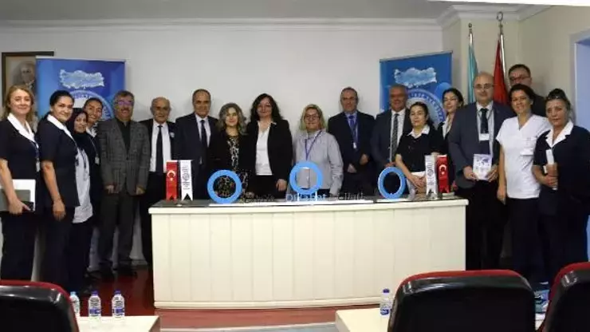

Prof. Dr. Ersoy: Türkiye, Avrupa kıtasında en fazla diyabetli kişinin yaşadığı ülkelerden birisi
İsmail Hakkı SEYMEN/BURSA, (DHA)-BURSA Uludağ Üniversitesi (BUÜ) Hastanesi İç Hastalıkları Anabilim Dalı Endokrinoloji ve Metabolizma Hastalıkları Bilim Dalı akademisyenlerinden Prof. Dr. Canan Ersoy “Ülkemizde 2010 yılında yapılan bir araştırmada diyabet sıklığı yüzde 13,7 olarak saptanmıştır ve artış devam etmektedir.
Türkiye, Avrupa kıtasında en fazla diyabetli kişinin yaşadığı ülkelerden birisi” dedi. BUÜ Hastanesi, ‘14 Kasım Dünya Diyabet Günü’ nedeniyle düzenlenen programa ev sahipliği yaptı.
Türkiye Endokrinoloji ve Metabolizma Derneği çatısı altında faaliyetlerini sürdüren Diyabet Bilimsel Çalışma Grubu’nun ülke genelinde gerçekleştirdiği, ‘Diyabete Birlikte Dur Diyelim’ toplantılarının Bursa ayağı, BUÜ Hastanesi’nde yapıldı. Programa Tıp Fakültesi Dekanı Prof. Dr. Funda Coşkun, BUÜ Hastanesi Başhekimi Prof. Dr. Halil Sağlam, akademik ve idari personel ile çok sayıda vatandaş katıldı.
Toplantıda konuşan BUÜ Hastanesi İç Hastalıkları Anabilim Dalı Endokrinoloji ve Metabolizma Hastalıkları Bilim Dalı Öğretim Üyesi ve Türkiye Endokrinoloji ve Metabolizma Derneği Diyabet Bilimsel Çalışma grubu başkanı Prof. Dr. Canan Ersoy, diyabetin dünyada ve Türkiye’de sıklığı giderek artan bir sağlık sorunu olduğunu açıkladı.
Dünyada her 10 erişkinden birinin diyabetli olduğunu bildiren Prof. Dr. Canan Ersoy, “Ülkemizde 2010 yılında yapılan bir araştırmada diyabet sıklığı yüzde 13,7 olarak saptanmıştır ve artış devam etmektedir.
Türkiye, Avrupa kıtasında en fazla diyabetli kişinin yaşadığı ülkelerden birisi. Bu artışın temel sebebi günümüz dünyasında hareketsiz yaşam tarzı ve yüksek kalorili gıda alımının, dolayısıyla şişmanlığın artıyor olmasıdır. Sağlıklı beslenme ve hareketli yaşam tarzının benimsenmesi diyabet sıklığının artışını önlemek için çok önemlidir” diye konuştu.